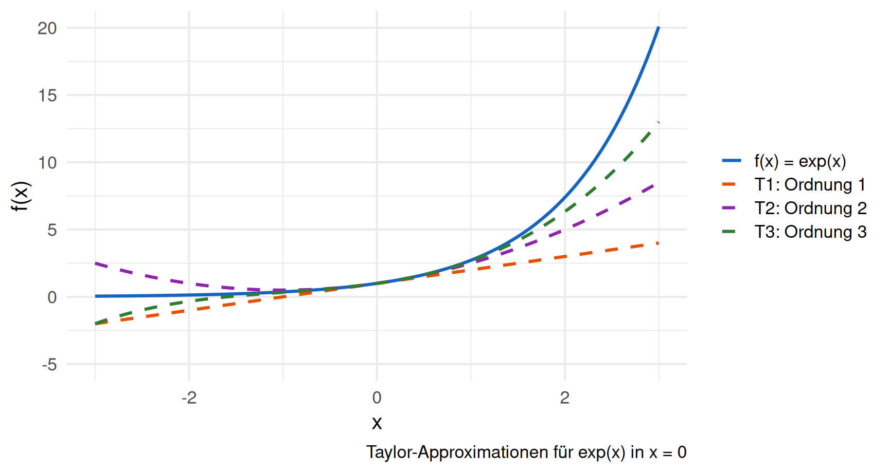
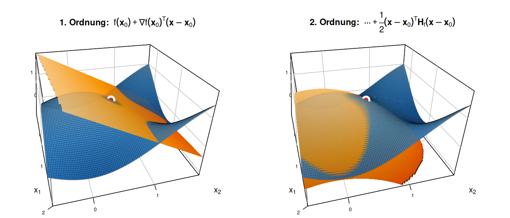
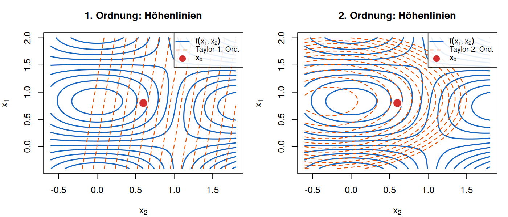
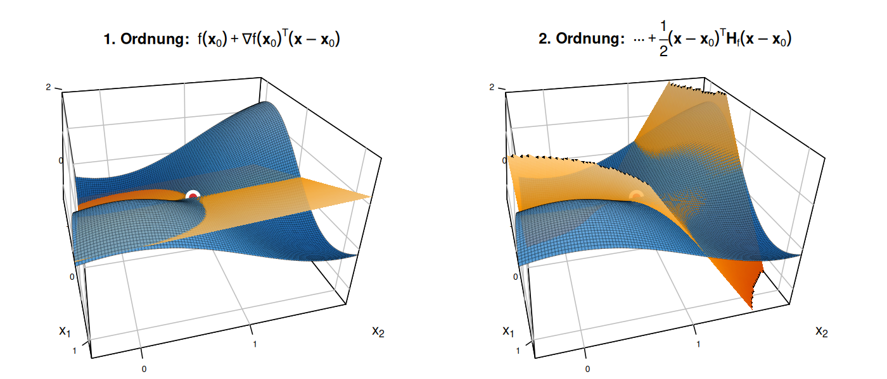
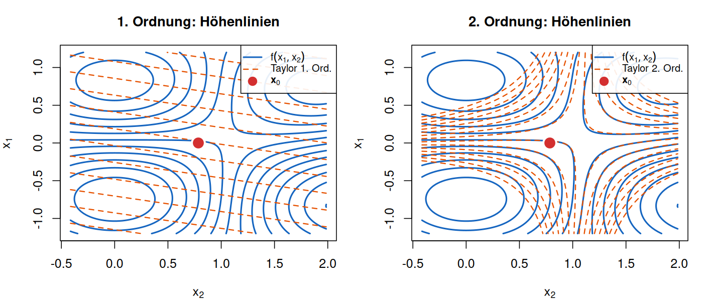
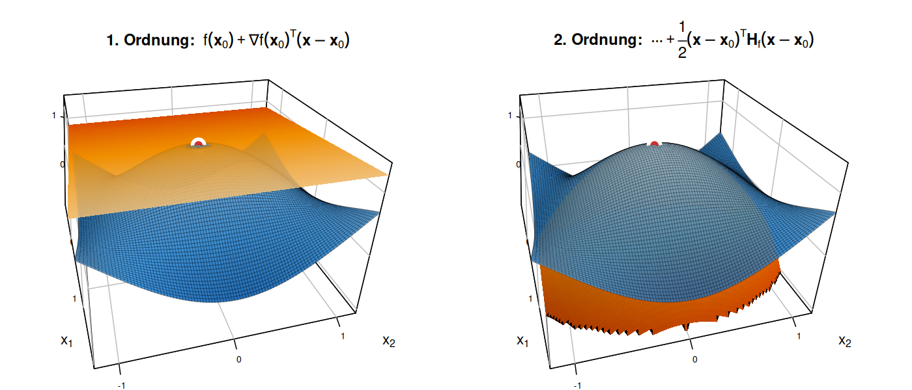
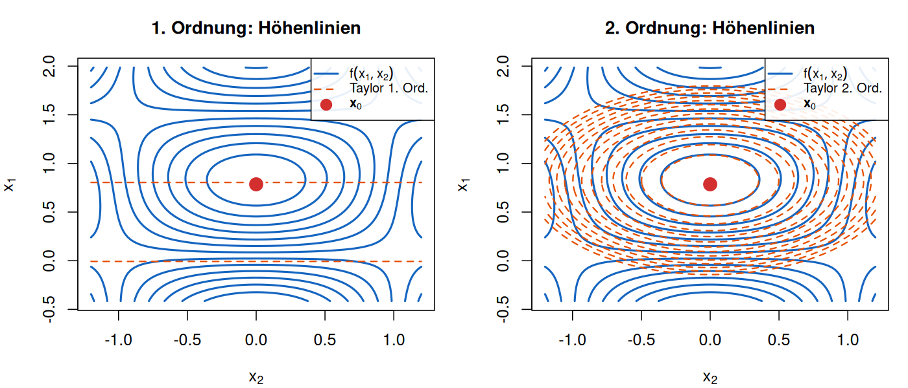

Fortgeschrittene mathematische Methoden in der Statistik
fabian.scheipl@lmu.de)\[ \definecolor{fmmgreen}{RGB}{0,158,115} \definecolor{fmmblue}{RGB}{0,114,178} \definecolor{fmmred}{RGB}{213,94,0} \definecolor{fmmorange}{RGB}{230,159,0} \definecolor{fmmpurple}{RGB}{158,87,213} \newcommand{\ind}{\unicode{x1D7D9}} \newcommand{\R}{{\mathbb{R}}} \newcommand{\N}{{\mathbb{N}}} \newcommand{\Q}{{\mathbb{Q}}} \newcommand{\C}{\mathbb{C}} \newcommand{\P}{\mathbb{P}} \newcommand{\Z}{{\mathbb{Z}}} \newcommand{\E}{{\mathbb{E}}} \newcommand{\K}{{\mathbb{K}}} \newcommand{\L}{\mathbb{L}} \newcommand{\F}{{\mathbb{F}}} \newcommand{\G}{\mathbb{G}} \newcommand{\S}{\mathbb{S}} \newcommand{\D}{{\mathbb{D}}} \newcommand{\bnull}{{\boldsymbol{0}}} \newcommand{\bzero}{{\boldsymbol{0}}} \newcommand{\ba}{{\boldsymbol{a}}} \newcommand{\bb}{{\boldsymbol{b}}} \newcommand{\bc}{{\boldsymbol{c}}} \newcommand{\bd}{{\boldsymbol{d}}} \newcommand{\be}{{\boldsymbol{e}}} \newcommand{\bg}{{\boldsymbol{g}}} \newcommand{\bh}{{\boldsymbol{h}}} \newcommand{\bi}{{\boldsymbol{i}}} \newcommand{\bj}{{\boldsymbol{j}}} \newcommand{\bk}{{\boldsymbol{k}}} \newcommand{\bl}{{\boldsymbol{l}}} \newcommand{\bn}{{\boldsymbol{n}}} \newcommand{\bo}{{\boldsymbol{o}}} \newcommand{\bp}{{\boldsymbol{p}}} \newcommand{\bq}{{\boldsymbol{q}}} \newcommand{\br}{{\boldsymbol{r}}} \newcommand{\bs}{{\boldsymbol{s}}} \newcommand{\bt}{{\boldsymbol{t}}} \newcommand{\bu}{{\boldsymbol{u}}} \newcommand{\bv}{{\boldsymbol{v}}} \newcommand{\bw}{{\boldsymbol{w}}} \newcommand{\bx}{{\boldsymbol{x}}} \newcommand{\by}{{\boldsymbol{y}}} \newcommand{\bz}{{\boldsymbol{z}}} \newcommand{\bA}{{\boldsymbol{A}}} \newcommand{\bB}{{\boldsymbol{B}}} \newcommand{\bC}{{\boldsymbol{C}}} \newcommand{\bD}{{\boldsymbol{D}}} \newcommand{\bE}{{\boldsymbol{E}}} \newcommand{\bF}{{\boldsymbol{F}}} \newcommand{\bG}{{\boldsymbol{G}}} \newcommand{\bH}{{\boldsymbol{H}}} \newcommand{\bI}{{\boldsymbol{I}}} \newcommand{\bJ}{{\boldsymbol{J}}} \newcommand{\bK}{{\boldsymbol{K}}} \newcommand{\bL}{{\boldsymbol{L}}} \newcommand{\bM}{{\boldsymbol{M}}} \newcommand{\bN}{{\boldsymbol{N}}} \newcommand{\bO}{{\boldsymbol{O}}} \newcommand{\bP}{{\boldsymbol{P}}} \newcommand{\bQ}{{\boldsymbol{Q}}} \newcommand{\bR}{{\boldsymbol{R}}} \newcommand{\bS}{{\boldsymbol{S}}} \newcommand{\bT}{{\boldsymbol{T}}} \newcommand{\bU}{{\boldsymbol{U}}} \newcommand{\bV}{{\boldsymbol{V}}} \newcommand{\bW}{{\boldsymbol{W}}} \newcommand{\bX}{{\boldsymbol{X}}} \newcommand{\bY}{{\boldsymbol{Y}}} \newcommand{\bZ}{{\boldsymbol{Z}}} \newcommand{\tagqed}{\tag*{$\blacksquare$}} \newcommand{\Acal}{{\mathcal{A}}} \newcommand{\Bcal}{{\mathcal{B}}} \newcommand{\Ccal}{{\mathcal{C}}} \newcommand{\Dcal}{{\mathcal{D}}} \newcommand{\Ecal}{{\mathcal{E}}} \newcommand{\Fcal}{{\mathcal{F}}} \newcommand{\Gcal}{{\mathcal{G}}} \newcommand{\Hcal}{{\mathcal{H}}} \newcommand{\Ical}{{\mathcal{I}}} \newcommand{\Jcal}{{\mathcal{J}}} \newcommand{\Kcal}{{\mathcal{K}}} \newcommand{\Lcal}{{\mathcal{L}}} \newcommand{\Mcal}{{\mathcal{M}}} \newcommand{\Ncal}{{\mathcal{N}}} \newcommand{\Ocal}{{\mathcal{O}}} \newcommand{\Pcal}{{\mathcal{P}}} \newcommand{\Qcal}{{\mathcal{Q}}} \newcommand{\Rcal}{{\mathcal{R}}} \newcommand{\Scal}{{\mathcal{S}}} \newcommand{\Tcal}{{\mathcal{T}}} \newcommand{\Ucal}{{\mathcal{U}}} \newcommand{\Vcal}{{\mathcal{V}}} \newcommand{\Wcal}{{\mathcal{W}}} \newcommand{\Xcal}{{\mathcal{X}}} \newcommand{\Ycal}{{\mathcal{Y}}} \newcommand{\Zcal}{{\mathcal{Z}}} \newcommand{\eps}{{\varepsilon}} \newcommand{\beps}{{\boldsymbol{\epsilon}}} \newcommand{\balpha}{{\boldsymbol{\alpha}}} \newcommand{\bbeta}{{\boldsymbol{\beta}}} \newcommand{\bchi}{{\boldsymbol{\chi}}} \newcommand{\bdelta}{{\boldsymbol{\delta}}} \newcommand{\bDelta}{{\boldsymbol{\Delta}}} \newcommand{\bepsilon}{{\boldsymbol{\epsilon}}} \newcommand{\bphi}{{\boldsymbol{\phi}}} \newcommand{\bgamma}{{\boldsymbol{\gamma}}} \newcommand{\betah}{{\boldsymbol{\eta}}} \newcommand{\btheta}{{\boldsymbol{\theta}}} \newcommand{\biota}{{\boldsymbol{\iota}}} \newcommand{\bkappa}{{\boldsymbol{\kappa}}} \newcommand{\blambda}{{\boldsymbol{\lambda}}} \newcommand{\bLambda}{{\boldsymbol{\Lambda}}} \newcommand{\bmu}{{\boldsymbol{\mu}}} \newcommand{\bnu}{{\boldsymbol{\nu}}} \newcommand{\bomikron}{{\boldsymbol{\omicron}}} \newcommand{\bpi}{{\boldsymbol{\pi}}} \newcommand{\bSigma}{{\boldsymbol{\Sigma}}} \newcommand{\bxi}{{\boldsymbol{\xi}}} \newcommand{\bzeta}{{\boldsymbol{\zeta}}} \newcommand{\bomega}{{\boldsymbol{\omega}}} \newcommand{\equivto}{{\Leftrightarrow}} \newcommand{\quequiv}{{\quad \equivto \quad}} \newcommand{\impl}{{\implies}} \newcommand{\quimpl}{{\quad \implies \quad}} \newcommand{\implby}{{\impliedby}} \newcommand{\notimplies}{\not\implies} \newcommand{\tr}{{\operatorname{tr}}} \newcommand{\spann}{{\operatorname{span}}} \newcommand{\col}{{\operatorname{col}}} \newcommand{\rang}{{\operatorname{rang}}} \newcommand{\diag}{{\operatorname{diag}}} \newcommand{\vec}{\operatorname{vec}} \newcommand{\pinv}{{^{+}}} \newcommand{\kron}{\mathbin{\otimes_{\mathrm{K}}}} \newcommand{\sign}{{\operatorname{sign}}} \newcommand{\la}{{\langle}} \newcommand{\ra}{{\rangle}} \newcommand{\inner}[1]{{\langle #1 \rangle}} \newcommand{\proj}{{\operatorname{proj}}} \newcommand{\bar}{\overline} \newcommand{\vol}{{\operatorname{vol}}} \newcommand{\dx}{{\, \mathrm{d}x}} \newcommand{\ol}{{\overline}} \newcommand{\argmax}{\mathop{\mathrm{arg\,max}}} \newcommand{\argmin}{\mathop{\mathrm{arg\,min}}} \newcommand{\conv}{\mathop{\mathrm{conv}}} \newcommand{\epi}{\mathop{\mathrm{epi}}} \newcommand{\interior}{\mathop{\mathrm{int}}} \newcommand{\Pr}{\mathbb{P}} \newcommand{\var}{{\mathbb{V}\mathrm{ar}}} \newcommand{\bias}{{\operatorname{bias}}} \newcommand{\abias}{{\mathrm{ABias}}} \newcommand{\AMSE}{{\mathrm{AMSE}}} \newcommand{\AMISE}{{\mathrm{AMISE}}} \newcommand{\cov}{{\mathbb{C}\mathrm{ov}}} \newcommand{\corr}{{\mathrm{Corr}}} \newcommand{\ov}{{\overline}} \newcommand{\wh}[1]{{\widehat{#1}}} \newcommand{\wt}[1]{{\widetilde{#1}}} \newcommand{\tod}{{\stackrel{d}{\to}}} \newcommand{\sumin}{{\sum_{i = 1}^n}} \newcommand{\sumjn}{{\sum_{j = 1}^n}} \newcommand{\KL}{{\operatorname{KL}}} \newcommand{\softmax}{{\operatorname{SoftMax}}} \newcommand{\layernorm}{{\operatorname{LayerNorm}}} \newcommand{\avg}{{\operatorname{avg}}} \newcommand{\relu}{{\operatorname{ReLu}}} \newcommand{\VC}{{\operatorname{VC}}} \newcommand{\indep}{{\perp \!\!\! \perp}} \newcommand{\unif}{{\operatorname{Unif}}} \newcommand{\bern}{{\operatorname{Bernoulli}}} \newcommand{\binomial}{{\operatorname{Binomial}}} \newcommand{\MSE}{{\operatorname{MSE}}} \newcommand{\iid}{\textit{iid}\;} \newcommand{\IF}{{\operatorname{IF} }} \newcommand{\BIC}{{\operatorname{BIC}}} \newcommand{\AIC}{{\operatorname{AIC}}} \newcommand{\IC}{{\operatorname{IC}}} \newcommand{\expl}[1]{{\tag*{[#1]}}} \newcommand{\cb}[1]{\textbf{#1}} \newcommand{\cbgreen}[1]{\textcolor{fmmgreen}{\textbf{#1}}} \newcommand{\cbred}[1]{\textcolor{fmmred}{\textbf{#1}}} \newcommand{\cbpurp}[1]{\textcolor{fmmpurple}{\textbf{#1}}} \newcommand{\cborange}[1]{\textcolor{fmmorange}{\textbf{#1}}} \newcommand{\corange}[1]{{\textcolor{fmmorange}{#1}}} \newcommand{\cblue}[1]{{\textcolor{fmmblue}{#1}}} \newcommand{\cgreen}[1]{{\textcolor{fmmgreen}{#1}}} \newcommand{\cred}[1]{{\textcolor{fmmred}{#1}}} \newcommand{\cpurp}[1]{{\textcolor{fmmpurple}{#1}}} \newcommand{\symbf}[1]{\boldsymbol{#1}} \]
Frage 1: Sei \(f \colon \R \to \R\) differenzierbar in \(x\) mit Ableitung \(f'(x)\). Welche Aussagen sind wahr?
Frage 2: Sei \(f \colon \R^n \to \R^m\) differenzierbar. Welche Dimension hat die Jacobimatrix \(\bJ_f(\bx)\)?
Theorem: Stetigkeit aus Differenzierbarkeit
Seien \(\D\) und \(\E\) normierte Räume und \(f \colon \D \to \E\) in \(\bx \in \D\) differenzierbar.
Dann ist \(f\) in \(\bx\) stetig.
Beweis.
Notation:
\(r(\bh) = O(\left\|\bh\right\|)\) für \(\left\|\bh\right\| \to 0\) heißt:
\(\left\|r(\bh)\right\| \le C \left\|\bh\right\|\) für alle hinreichend kleinen \(\bh\) —
im Unterschied zu \(r(\bh) = o(\left\|\bh\right\|)\), wo \(\left\|r(\bh)\right\| / \left\|\bh\right\| \to 0\) gilt.
Betrachte \(f \colon \R \to \R\) mit \(f(x) = |x|\).
Fazit:
Theorem: Linearität der Ableitungsoperation
Seien \(\D\) und \(\E\) normierte Räume und \(f, g \colon \D \to \E\) in \(\bx \in \D\) differenzierbar.
Dann ist für alle \(c_1, c_2 \in \R\) auch \(c_1 f + c_2 g\) in \(\bx\) differenzierbar, mit \[D_{\bx} (c_1f + c_2g) = c_1 D_{\bx} f + c_2 D_{\bx} g.\]
Beweis: \(\to\) Übung
Beispiele
Für \(\D = \R\), \(\E = \R\): \(\qquad\qquad(c_1 f + c_2g)' = c_1 f' + c_2 g'\)
Für \(\D = \R^n\), \(\E = \R\): \[\nabla \left[c_1 f(\bx) + c_2g(\bx)\right] = c_1 \nabla f(\bx) + c_2 \nabla g(\bx)\]
Für \(\D = \R^n\), \(\E = \R^m\): \[\bJ_{c_1 f + c_2g}(\bx) = c_1 \bJ_f(\bx) + c_2 \bJ_g(\bx)\]
Für \(\D = \R\), \(\E = \R^{m \times n}\): \[\frac{\partial \left[c_1\bF(x) + c_2\bG(x)\right]}{\partial x} = c_1 \frac{\partial \bF(x)}{ \partial x} + c_2\frac{\partial \bG(x)}{\partial x}\]
Für \(\D = \R^{m \times n}, \E = \R\): \[\frac{\partial \left[c_1f(\bX) + c_2g(\bX)\right]}{\partial \bX} = c_1 \frac{\partial f(\bX)}{\partial \bX} + c_2\frac{\partial g(\bX)}{\partial \bX}\]
Gegeben: \(f(\bx) = \bx^\top \bx\) und \(g(\bx) = \ba^\top \bx\) mit \(\ba = (1, 2)^\top\).
Berechne \(\nabla h(\bx)\) für \(h(\bx) = 3f(\bx) - 2g(\bx)\) an der Stelle \(\bx = (1, -1)^\top\).
(Achtung: \(h\) ist hier ausnahmsweise ein Funktionsname, nicht der Zuwachs \(\bh\).)
Lösung:
Berechne Gradienten:
Wende Linearität an: \[\nabla h(\bx) = 3 \cgreen{\nabla f(\bx)} - 2 \cblue{\nabla g(\bx)} = 3 \cgreen{(2x_1,\; 2x_2)} - 2\cblue{(1,\; 2)} = (6x_1 - 2,\; 6x_2 - 4)\]
Setze \(\bx = (1, -1)^\top\) ein: \[\nabla h\left(\begin{pmatrix} 1 \\ -1 \end{pmatrix}\right) = (6 \cdot 1 - 2,\; 6 \cdot (-1) - 4) = (4,\; -10)\]
Theorem: Produktregel
Seien \(\D, \E, \mathbb{B}\) normierte Räume, \(f, g \colon \D \to \E\) in \(\bx \in \D\) differenzierbar, \(\langle \cdot, \cdot \rangle \colon \E \times \E \to \mathbb{B}\) eine beschränkte bilineare Abbildung und \(b(\bx) = \langle f(\bx), g(\bx)\rangle\).
Dann gilt \[D_{\bx} b (\bh) = \langle D_{\bx} f(\bh), g(\bx) \rangle + \langle f(\bx), D_{\bx} g(\bh) \rangle.\]
Beweis (kompakt):
Differenzierbarkeit von \(f, g\) einsetzen, Bilinearität ausmultiplizieren: \[\begin{align*} b(\bx + \bh) &= \bigl\langle \cgreen{f(\bx) + D_{\bx} f(\bh)} + \cred{o(\left\|\bh\right\|)},\; \cblue{g(\bx) + D_{\bx} g(\bh)} + \cred{o(\left\|\bh\right\|)}\bigr\rangle \\ &= b(\bx) + \underbrace{\langle \cgreen{D_{\bx} f(\bh)}, \cblue{g(\bx)} \rangle + \langle \cgreen{f(\bx)}, \cblue{D_{\bx} g(\bh)} \rangle}_{=\, D_{\bx} b(\bh)\; \text{(linear in $\bh$)}} + \underbrace{\cred{\langle D_{\bx} f(\bh), D_{\bx} g(\bh) \rangle + o(\left\|\bh\right\|)}}_{=\, O(\left\|\bh\right\|^2) + o(\left\|\bh\right\|) \,=\, o(\left\|\bh\right\|)} \tagqed \end{align*}\]
Kreuzterm: \(\cred{D_{\bx} f(\bh), D_{\bx} g(\bh)}\) sind beide \(O(\left\|\bh\right\|)\) (beschränkte lineare Abbildungen), die bilineare Abbildung multipliziert die Größenordnungen \(\to O(\left\|\bh\right\|^2)\).
Beispiele:
Sei \(b(\bx) = f(\bx)^\top g(\bx) = \bx^\top \bA \bx\) mit \(\cgreen{f(\bx) = \bx}\) und \(\cblue{g(\bx) = \bA\bx}\).
Aufgabe:
Berechne \(\nabla b(\bx)\).
Lösung:
Theorem: Kettenregel
Seien \(\D_1, \D_2, \D_3\) normierte Räume und \(f \colon \D_1 \to \D_2\), \(g \colon \D_2 \to \D_3\), sodass \(g \circ f\colon \D_1 \to \D_3\).
Ist \(f\) in \(\bx \in \D_1\) und \(g\) in \(\by = f(\bx) \in \D_2\) differenzierbar, dann ist \[D_{\bx} (g \circ f) = D_{\by} g \circ D_{\bx} f.\]
\[\begin{align*} (g \circ f)(\bx + \bh) &= g\left(f(\bx) + \cgreen{D_{\bx} f(\bh)} + \cred{o(\left\|\bh\right\|)}\right) \\ \text{\small[$g$ diff'bar:]\qquad} &= g\left(f(\bx)\right) + \cblue{D_{\by} g}\left(\cgreen{D_{\bx} f(\bh)} + \cred{o(\left\|\bh\right\|)}\right) + \cred{o(\left\|\bh\right\|)} \\ \text{\small[$D_{\by} g$ linear:]\qquad} &= g\left(f(\bx)\right) + \cblue{D_{\by} g}\left(\cgreen{D_{\bx} f(\bh)}\right) + \cred{D_{\by} g\left(o(\left\|\bh\right\|)\right)} + \cred{o(\left\|\bh\right\|)} \\ \text{\small[$D_{\by} g$ beschr.:]\qquad} &= g\left(f(\bx)\right) + \cblue{D_{\by} g}\left(\cgreen{D_{\bx} f(\bh)}\right) + \cred{o(\left\|\bh\right\|)} \\ &= (g \circ f)(\bx) + \left(\cblue{D_{\by} g} \circ \cgreen{D_{\bx} f}\right)(\bh) + o(\left\|\bh\right\|) \tagqed \end{align*}\]
Zeile 2:
Der Restterm von \(g\) ist zunächst nur klein im weitergereichten Zuwachs \(\bk = \cgreen{D_{\bx} f(\bh)} + \cred{o(\left\|\bh\right\|)}\), also \(o(\left\|\bk\right\|)\).
Da \(\cgreen{D_{\bx} f}\) beschränkt ist (\(\left\|\cgreen{D_{\bx} f(\bh)}\right\| \le M_f \left\|\bh\right\|\)), gilt für kleine \(\bh\) aber \(\left\|\bk\right\| \le (M_f + 1)\left\|\bh\right\|\) —
damit ist \(o(\left\|\bk\right\|)\) auch \(o(\left\|\bh\right\|)\).
Beispiele:
Problem (Kapitel 7 — Lineare Regression):
Response \(\by \in \R^n\), Designmatrix \(\bX \in \R^{n \times p}\): \[\ell(\bbeta) = \left\|\by - \bX\bbeta\right\|_2^2 \to \min_{\bbeta}\]
Schritt 1 — als Skalarprodukt schreiben:
\[\ell(\bbeta) = \cgreen{(\by - \bX\bbeta)}^\top \cgreen{(\by - \bX\bbeta)} = \langle \cgreen{f(\bbeta)}, \cgreen{f(\bbeta)} \rangle
\quad \text{mit } \cgreen{f(\bbeta) = \by - \bX\bbeta}\]
Schritt 2 — Jacobimatrix des inneren Terms (Linearität):
\[\cblue{\bJ_f(\bbeta) = -\bX}\]
Schritt 3 — Produktregel (mit \(g = f\), beide Summanden gleich):
\[\begin{align*}
\nabla \ell(\bbeta) &= \cgreen{f(\bbeta)}^\top \cblue{\bJ_f(\bbeta)} + \cgreen{f(\bbeta)}^\top \cblue{\bJ_f(\bbeta)} \\
&= 2\, \cgreen{(\by - \bX\bbeta)}^\top \cblue{(-\bX)} = -2\, \cgreen{(\by - \bX\bbeta)}^\top \cblue{\bX}
\end{align*}\]
Schritt 4 — Gradient nullsetzen:
Am Minimum muss der Gradient verschwinden. (Optimalitätsbedingung \(\to\) Optimierung I): \[\nabla \ell(\wh{\bbeta}) = -2\, \cgreen{\bigl(\by - \bX\wh{\bbeta}\bigr)}^\top \cblue{\bX} \overset{!}{=} \bnull^\top\]
Transponieren und umstellen: \[\cblue{\bX^\top} \cgreen{\bigl(\by - \bX\wh{\bbeta}\bigr)} = \bnull \quimpl \boxed{\bX^\top\bX\, \wh{\bbeta} = \bX^\top \by}\]
\(\to\) die Normalengleichungen: die KQ-Lösung aus Kapitel 7 — jetzt hergeleitet!
Payoff:
Kettenregel mit Jacobimatrizen: \[\frac{\partial L}{\partial \bW_k} = \frac{\partial L}{\partial \hat{\by}} \cdot \bJ_{f_K}(\bz_{K-1}) \cdot \bJ_{f_{K-1}}(\bz_{K-2}) \cdots \bJ_{f_{k+1}}(\bz_{k}) \cdot \frac{\partial f_k(\bz_{k-1})}{\partial \bW_k}\]
Backpropagation = effiziente Berechnung dieser Jacobimatrizen-Kette!
Beispiel:
Mit ReLU-Aktivierung \(\sigma(x) = \max(0, x)\) ist \(f_k(\bz_{k-1}) = \max(\bnull, \bW_k\bz_{k-1})\), also: \[\bJ_{f_k}(\bz_{k-1}) = \text{diag}\left(\mathbb{I}_{\bW_k \bz_{k-1} > 0}\right) \cdot \bW_k\]
(nur für \((\bW_k \bz_{k-1})_i \neq 0\): an den Knickstellen ist \(\max(0, \cdot)\) nicht differenzierbar)
Sei \(h(\bx) = \left\| \bx \right\|_2 = \sqrt{\bx^\top \bx}\).
Frage:
Was ist \(\nabla h(\bx)\) für \(\bx \neq \bnull\)?
Antwort:
Def.: \(k\)-mal (Fréchet-)differenzierbar
Seien \(\D\) und \(\E\) zwei normierte Räume und \(f \colon \D \to \E\). Definiere \(D^0_{\bx} f := f(\bx)\).
Wir nennen \(f\) an der Stelle \(\bx \in \D\) \(k\)-mal (Fréchet-)differenzierbar,
falls für \(j = 1, \dots, k\) beschränkte, multilineare Abbildungen \(D_{\bx}^j f \colon \D^j \to \E\) existieren,
sodass für alle \(\bh_1, \dots, \bh_{j-1}\) und für \(\bh \to \bnull\) gilt: \[\begin{align*}
D_{\bx}^{j} f(\bh_1, \dots, \bh_{j-1}, \bh) = D_{\bx + \bh}^{j - 1}f(\bh_1, \dots, \bh_{j - 1}) - D_{\bx}^{j - 1}f(\bh_1, \dots, \bh_{j - 1}) + o(\left\|\bh\right\|)\prod^{j-1}_{i=1}\|\bh_i\|
\end{align*}\]
Sei \(f \colon \R^n \to \R\) (z.B. eine Log-Likelihood) und \(f \in \mathcal{C}^2\).
(Symmetrie von \(\bH_f\) für \(f \in \mathcal{C}^2\): \(\to\) Satz von Schwarz, gleich.)
Def.: Hesse-Matrix
Die Hesse-Matrix \(\bH_f(\bx)\) einer zweimal differenzierbaren Funktion \(f\colon S \subseteq \R^n \to \R\) (\(S\) offen) ist die Matrix der zweiten partiellen Ableitungen, also \[\bH_f(\bx) := \left(\frac{\partial^2 f(\bx)}{ \partial x_i \partial x_j}\right)_{i, j = 1, \dots, n} \in \R^{n \times n}.\]
Hier ist:
\(D_{\bx} f (\bh) = \nabla f(\bx) \bh\)
\(D_{\bx}^2 f(\bh_1, \bh_2) = \bh_1^\top \bH_f(\bx) \bh_2\) mit Hesse-Matrix \(\bH_f(\bx) \in \R^{n \times n}\).
(\(D_{\bx}^3 f \in \R^{n \times n \times n}\) wäre ein Tensor mit \(\left(D_{\bx}^3 f\right)_{i, j, k} = \frac{\partial^3 f(\bx)}{\partial x_k \partial x_j \partial x_i}\) und \(D^3_{\bx} f (\bh_1, \bh_2, \bh_3) = \sum_{i,j,k} \left(D_{\bx}^3 f\right)_{i, j, k} h_{1i} h_{2j} h_{3k}\))
Theorem: Satz von Schwarz
Sei \(f \colon \R^n \to \R\) zweimal stetig differenzierbar (\(f \in \mathcal{C}^2\)). Dann gilt: \[\frac{\partial^2 f(\bx)}{\partial x_i \partial x_j} = \frac{\partial^2 f(\bx)}{\partial x_j \partial x_i} \quad \text{für alle $i, j$.}\]
\(\implies\) Hesse-Matrix für \(f \in \mathcal{C}^2\) ist symmetrisch: \(\bH_f(\bx) = \bH_f(\bx)^\top\).
Hesse-Matrix charakterisiert die lokale Krümmung einer Funktion:
1. Definitheit der Hesse-Matrix:
Für \(f \in \mathcal{C}^2\), \(f \colon \R^n \to \R\), an einem kritischen Punkt \(\bx^*\) (d.h. \(\nabla f(\bx^*) = \bnull^\top\)):
\(\bH_f(\bx^*)\) positiv definit (\(\bh^\top \bH_f(\bx^*) \bh > 0\) für alle \(\bh \ne \bnull\)) \(\implies\) \(\bx^*\) ist ein lokales Minimum
\(\bH_f(\bx^*)\) negativ definit (\(\bh^\top \bH_f(\bx^*) \bh < 0\) für alle \(\bh \ne \bnull\)) \(\implies\) \(\bx^*\) ist ein lokales Maximum
\(\bH_f(\bx^*)\) indefinit (positive und negative Eigenwerte) \(\implies\) \(\bx^*\) ist ein Sattelpunkt
2. Konvexität:
\(f \in \mathcal{C}^2\) ist konvex auf einer offenen, konvexen Menge \(S \subseteq \R^n\) \(\iff\)
\(\bH_f(\bx) \succeq 0\) (positiv semidefinit) für alle \(\bx \in S\).
3. Quadratische Approximation:
\[f(\bx + \bh) \approx f(\bx) + \nabla f(\bx) \bh + \frac{1}{2} \bh^\top \bH_f(\bx) \bh\]
Heuristik: in typischen hochdimensionalen (nicht-konvexen) Problemen sind echte lokale Minima / Maxima selten, die meisten kritischen Punkte sind Sattelpunkte! \(\implies\) SGD & co funktionieren
\(\implies\) Singularity incoming (maybe….)
Statistik:
ML:
Hesse-Matrix der Verlustfunktion bestimmt Konditionierung von Optimierungsproblemen
Optimierung:
Hesse-Matrix bestimmt Konvergenzverhalten von Optimierungsalgorithmen
Def.: Fisher-Informationsmatrix
Für ein statistisches Modell mit Log-Likelihood \(\ell(\btheta)\) und Parameter \(\btheta \in \R^p\) ist die Fisher-Informationsmatrix, definiert als \[\bI(\btheta) := \E\left[-\bH_\ell(\btheta)\right] = -\E\left[\frac{\partial^2 \ell(\btheta)}{\partial \theta_i \partial\theta_j}\right]_{i,j} \in \R^{p \times p}.\]
Intuition:
Wichtige Konsequenz:
Asymptotische Effizienz des ML-Schätzers:
Für ML-Schätzer \(\wh{\btheta}_{ML}\) gilt (unter Regularitätsbedingungen) für großes \(n\) approximativ \[\var(\wh{\btheta}_{ML}) \approx \bI(\btheta)^{-1},\] der MLE erreicht damit asymptotisch die Cramér-Rao-Schranke, die untere Schranke für die Varianz unverzerrter Schätzer.
\(\implies\) mehr Information \(\to\) kleinere Varianz \(\to\) präzisere Schätzung
Wichtiger Fall: \[f \colon \R^n \to \R^m\]
Beispiel: Score-Funktion \(\nabla \ell(\btheta)^\top\) (in der Zeilenkonvention ist \(\nabla \ell\) eine Zeile, erst die Transponierte bildet \(\R^p \to \R^p\) ab), Momenten-Gleichungen
\(j\)-te Ableitung ist multilineare Abbildung \(D_{\bx}^j f \colon \left(\R^n\right)^j \to \R^m\): \(\to\) Stufe \(j+1\)-Tensor mit Dimensionen \(m \times \underbrace{n \times n \times \dots \times n}_{j-\text{mal}}\): \[D^j_{\bx} f(\bh_1,\dots,\bh_j) = \sum_{i_1,\dots,i_j=1}^n \underbrace{\frac{\partial^j f(\bx)}{\partial x_{i_j}\cdots \partial x_{i_1}}}_{\in\, \R^m} h_{1,i_1} \cdots h_{j,i_j}\]
Insbesondere: \[D_{\bx} f (\bh) = \bJ_f(\bx) \bh, \qquad D_{\bx}^2 f (\bh_1, \bh_2) = \sum_{i = 1}^n \frac{\partial \bJ_f(\bx)}{\partial x_i} \bh_1 \cdot h_{2, i}\] (ausgeschriebene Summenformeln für \(j = 1, 2, 3\): \(\to\) Anhang)
Theorem: Taylorentwicklung I
Sei \(f \colon \R \to \R\) \((k+1)\)-mal stetig differenzierbar.
Dann gilt für \(h \to 0\): \[\begin{align*} f(x + h) = f(x) + \sum_{j = 1}^k \frac{1}{j!} f^{(j)}(x)h^j + o\bigl( \left|h\right|^k\bigr). \end{align*}\]
Beweisskizze: \(\to\) Anhang.
\[f(x) \approx T_k(x) = f(0) + f'(0)x + \tfrac{1}{2} f''(0)x^2 + \tfrac{1}{6} f'''(0)x^3 + \ldots\]

Theorem: Taylorentwicklung II
Seien \(V, W\) normierte Räume und \(f \colon V \to W\) \(k\)-mal stetig Fréchet-differenzierbar (\(f \in \mathcal{C}^k\)).
Dann gilt für \(\bh \to \bzero\): \[\begin{align*}
f(\bx + \bh) = f(\bx) + \sum_{j = 1}^k \frac{1}{j!} D_{\bx}^j f(\underbrace{\bh, \dots, \bh}_{\text{$j$-mal}}) + o\bigl( \left\|\bh\right\|^k\bigr).
\end{align*}\]
Beweisskizze (Reduktion auf den 1D-Fall): \(\to\) Anhang.






Selbst ausprobieren: Shiny-App
Problemstellung:
Finde \(\bx^* = \arg\min_{\bx} f(\bx)\) für zweimal stetig diff.bare \(f \colon \R^n \to \R\)
Idee:
Approximiere \(f(\bx)\) um aktuellen Punkt \(\bx^{(k)}\) durch das Taylor-Polynom 2. Ordnung (Entwicklungspunkt \(\bx^{(k)}\)): \[f(\bx) \approx T_2\left(\bx\right) = f\left(\bx^{(k)}\right) + \nabla f\left(\bx^{(k)}\right) \left(\bx - \bx^{(k)}\right) + \frac{1}{2} \left(\bx - \bx^{(k)}\right)^\top \bH_f\left(\bx^{(k)}\right) \left(\bx - \bx^{(k)}\right)\]
Newton-Schritt:
Minimiere \(T_2(\bx)\) bzgl. \(\bx\). (für \(\bH_f\left(\bx^{(k)}\right)\) positiv definit , sonst hat \(T_2\) kein Minimum): \[\begin{align*}
\nabla T_2(\bx) = \nabla f\left(\bx^{(k)}\right) + \left(\bx - \bx^{(k)}\right)^\top\bH_f\left(\bx^{(k)}\right) &\overset{!}{=} \bzero^\top \\
\implies \left(\bx - \bx^{(k)}\right)^\top &= -\nabla f\left(\bx^{(k)}\right)\bH_f\left(\bx^{(k)}\right)^{-1}
\end{align*}\] Newton-Iteration:
\[\bx^{(k+1)} = \bx^{(k)} - \left(\nabla f\left(\bx^{(k)}\right)\bH_f\left(\bx^{(k)}\right)^{-1}\right)^\top\]
Enorme Relevanz in ML/Statistics:
Maximum-Likelihood-Schätzung; IRLS/IWLS für GLMs; Trust-Region-Methoden (\(\to\) Optimierung II)
Heute gelernt
Frage 1: Sei \(b(\bx) = \bx^\top \bA \bx\) mit symmetrischem \(\bA \in \R^{n \times n}\). Was ist \(\nabla b(\bx)\)?
Frage 2: Sei \(f\) \((k+1)\)-mal stetig differenzierbar und \(T_k\) das Taylorpolynom vom Grad \(k\) um \(x\). Welche Ordnung hat der Approximationsfehler \(f(x + h) - T_k(x + h)\) für \(h \to 0\)?
Frage 3: Ein Newton-Schritt zur Minimierung von \(f \colon \R^n \to \R\) basiert auf …
Nächste Vorlesung
Problemstellung:
Binäre Klassifikation mit \(Y \in \{0, 1\}\) und Features \(\bx \in \R^p\): \(P(Y = 1 \mid \bx) = \sigma(\bbeta^\top \bx)\) mit \(\sigma(t) = \frac{1}{1 + e^{-t}}\)
Verlustfunktion für eine Beobachtung \((\bx, y)\) ist: \[\ell(\bbeta) = -\left[y \log\left(\sigma(\bbeta^\top \bx)\right) + (1-y) \log\left(1 - \sigma(\bbeta^\top \bx)\right)\right] = -\begin{cases} \log(P(Y =1 \mid \bx)) & \text{für } y = 1 \\ \log(P(Y=0 \mid \bx)) & \text{für } y = 0 \end{cases}\] Ableitung für \(y = 1\): \(\ell(\bbeta)|_{y=1} = -\log \sigma(\bbeta^\top \bx) = \cblue{g}(\cgreen{f(\bbeta)})\)
Mit Kettenregel und \(\hat{y} = \sigma(\bbeta^\top \bx)\): \[\begin{align*} \nabla \ell(\bbeta) &= \cblue{g'(\cgreen{f(\bbeta)})} \cgreen{\nabla f(\bbeta)} = \cblue{(\sigma(\bbeta^\top \bx) - 1)} \cgreen{\bx^\top} = (\hat{y} - 1) \bx^\top \end{align*}\]
Interpretation: Gradientenrichtung ist Fehler \(({\hat{y} - y})\) gewichtet mit \(\bx\)
Vertiefung: Beweisskizze.
Sei \(h > 0\) (Fall \(h < 0\) analog). Definiere auf \([x, x + h]\): \[\begin{align*} \cgreen{F(t)} &:= \cgreen{\sum_{j=0}^k \frac{f^{(j)}(t)}{j!}(x + h - t)^j}, & &\text{also } \cgreen{F(x + h)} = f(x + h),\; \cgreen{F(x)} = T_k(x + h), \\ \cblue{G(t)} &:= \cblue{(x + h - t)^{k+1}}, & &\text{also } \cblue{G(x + h)} = 0,\; \cblue{G(x)} = h^{k+1}, \end{align*}\] mit \(\cgreen{F'(t) = \frac{f^{(k+1)}(t)}{k!}(x + h - t)^k}\) (Teleskopsumme!) und \(\cblue{G'(t) = -(k+1)(x + h - t)^k} \neq 0\) auf \((x, x+h)\).
Cauchy-Mittelwertsatz: es gibt \(\xi \in (x, x + h)\) mit \[\frac{\cgreen{F(x + h) - F(x)}}{\cblue{G(x + h) - G(x)}} = \frac{\cgreen{F'(\xi)}}{\cblue{G'(\xi)}} \quimpl f(x + h) - T_k(x + h) = \frac{f^{(k+1)}(\xi)}{(k+1)!}\, h^{k+1} = o\left(|h|^{k}\right). \; \blacksquare\]
Wieso \(o(|h|^{k})\)? \(f^{(k+1)}\) stetig \(\implies\) lokal beschränkt durch ein \(M\), also \(\left| f^{(k+1)}(\xi)\, h^{k+1}/(k+1)! \right| \big/ |h|^k \le \tfrac{M}{(k+1)!}\,|h| \xrightarrow{h \to 0} 0\).
Vertiefung: Beweisskizze.
Fixiere \(\bx \in V\). Für \(\bh = \bzero\) ist die Aussage trivial; sei also \(\bh \neq \bzero\).
(Drei technische Feinheiten des Arguments: \(\to\) Anhang.)
Drei Punkte machen die Skizze zum vollständigen Beweis — hier für den im Kurs relevanten Fall \(V = \R^n\), \(W = \R^m\) (allgemeine normierte Räume brauchen andere Argumente):
1) Definitionsbereich: \(f\) muss auf einer Umgebung von \(\bx\) definiert sein, die das ganze Segment \(\bx + w\bu\), \(0 \leq w \leq s\), enthält — für hinreichend kleines \(\left\|\bh\right\|\) ist das erfüllt.
2) \(W\)-wertiges 1D-Taylor: Der 1D-Satz mit Peano-Restglied gilt zunächst für reellwertige Funktionen; wegen \(\dim W < \infty\) wendet man ihn koordinatenweise auf \(\psi = (\psi_1, \dots, \psi_m)\) an und sammelt die Restglieder ein.
3) Gleichmäßigkeit in der Richtung: Das \(o(s^k)\) aus dem 1D-Satz gilt zunächst pro fester Richtung \(\bu\). Damit daraus \(o(\left\|\bh\right\|^k)\) für beliebige \(\bh \to \bnull\) wird, muss der Fehlerterm gleichmäßig über alle Richtungen klein werden: Betrachte das Restglied für \(j = k\) in Lagrange-Form — die Differenz \(D^k_{\bx + \xi\bu}f - D^k_{\bx}f\) wird wegen der Stetigkeit von \(D^k f\) und der Kompaktheit der Einheitssphäre \(\{\left\|\bu\right\| = 1\}\) gleichmäßig klein.
Für \(f \colon \R^n \to \R^m\) ist insbesonders:
\[\begin{align*} D_{\bx} f (\bh) & = \sum_{i = 1}^n \frac{\partial f(\bx)}{\partial x_i} h_i = \bJ_f(\bx) \bh, \\ D_{\bx}^2 f (\bh_1, \bh_2) & = \sum_{i = 1}^n \sum_{j = 1}^n \frac{\partial^2 f(\bx)}{\partial x_j\partial x_i} h_{1, i} h_{2, j} = \sum_{i = 1}^n \frac{\partial \bJ_f(\bx)}{\partial x_i} \bh_1 \cdot h_{2, i}, \\ D_{\bx}^3 f (\bh_1, \bh_2, \bh_3) & = \sum_{i = 1}^n \sum_{j = 1}^n \sum_{k = 1}^n \frac{\partial^3 f(\bx)}{\partial x_k\partial x_j \partial x_i} h_{1, i} h_{2, j} h_{3, k} = \sum_{i = 1}^n \sum_{j = 1}^n \frac{\partial^2 \bJ_f(\bx)}{\partial x_j \partial x_i} \bh_1 \cdot h_{2, i} \cdot h_{3, j} \end{align*}\]